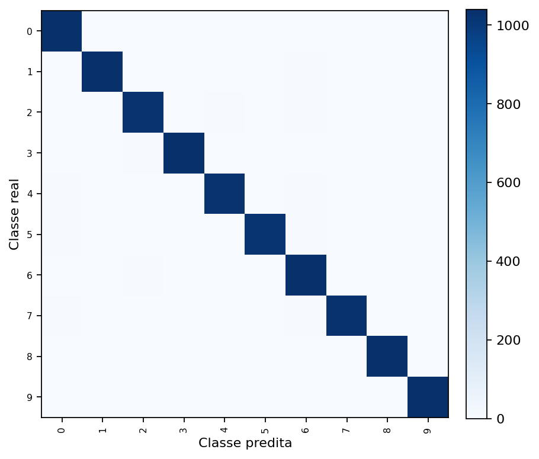
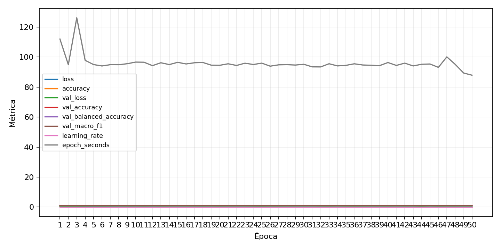

| n_samples | 10500 |
|---|---|
| loss | 0.0980915054678917 |
| accuracy | 0.9834285714285714 |
| balanced_accuracy | 0.9834285714285714 |
| macro_f1 | 0.9834460525930384 |


| Índice | Classe | Suporte | Precisão | Recall | F1 |
|---|---|---|---|---|---|
| 0 | 0 | 1050 | 0.9792843691148776 | 0.9904761904761905 | 0.9848484848484849 |
| 1 | 1 | 1050 | 0.9894636015325671 | 0.9838095238095238 | 0.9866284622731615 |
| 2 | 2 | 1050 | 0.9762357414448669 | 0.9780952380952381 | 0.9771646051379638 |
| 3 | 3 | 1050 | 0.9923371647509579 | 0.9866666666666667 | 0.9894937917860555 |
| 4 | 4 | 1050 | 0.9837164750957854 | 0.9780952380952381 | 0.9808978032473734 |
| 5 | 5 | 1050 | 0.9912790697674418 | 0.9742857142857143 | 0.9827089337175792 |
| 6 | 6 | 1050 | 0.9591836734693877 | 0.9847619047619047 | 0.9718045112781954 |
| 7 | 7 | 1050 | 0.9913461538461539 | 0.981904761904762 | 0.9866028708133971 |
| 8 | 8 | 1050 | 0.9876190476190476 | 0.9876190476190476 | 0.9876190476190476 |
| 9 | 9 | 1050 | 0.9848197343453511 | 0.9885714285714285 | 0.9866920152091255 |
{"adapter":"kmnist","balance_mode":"all_raw","class_names":["0","1","2","3","4","5","6","7","8","9"],"dataset":"kmnist","dataset_options":{},"dataset_root":"/home/msduda/datasets-tcc/kmnist","native_channels":1,"normalization":"unit_interval","num_classes":10,"protocol":{"checkpoint_monitor":"val_macro_f1","dtype_policy":"mixed_float16","early_stopping":{"patience":50,"restore_best_weights":true},"evaluation_augmentation":false,"input_channels":"native","optimizer":"Adam","pretrained_weights":false,"reduce_lr_on_plateau":{"factor":0.3,"min_lr":1e-07,"patience":50},"resize":"proportional_padding","test_time_augmentation":false,"training_from_scratch":true},"seed":42,"source_fingerprint":"8928d478d8d23938a73b4f4a92c407bf3d74beff1e0e67e3644d6ecdc30cf828","source_manifest":{"class_names":["0","1","2","3","4","5","6","7","8","9"],"joined_samples":70000,"metadata":{"layout":"kmnist-component-npz"},"name":"kmnist","native_channels":1,"source_path":"/home/msduda/datasets-tcc/kmnist","splits":{"test":10000,"train":60000},"target_size":64},"target_size":64,"test_fraction":0.15,"train_fraction":0.7,"training":{"augmentation":{"brightness_delta":0.0,"contrast_lower":1.0,"contrast_upper":1.0,"cutout_max_frac":0.0,"cutout_prob":0.0,"flip_lr":false,"noise_std":0.0,"translate_frac":0.0,"zoom_max":1.0,"zoom_min":1.0},"batch_size":48,"default_image_size":64,"dtype_policy":"mixed_float16","early_stopping_patience":50,"extra_fraction":0.0,"image_size_overrides":{"gtsrb":128},"keras_verbose":1,"learning_rate":0.0003,"max_epochs":50,"preprocess_cache_max_mib":0,"reduce_lr_factor":0.3,"reduce_lr_min_lr":1e-07,"reduce_lr_patience":50,"shuffle_buffer_max_mib":0},"validation_fraction":0.15}
{"epochs_completed":50,"epochs_recorded":50,"evaluation_seconds":30.38948063700002,"fit_seconds_current_attempt":461.597386323,"max_epoch_seconds":126.17297314100142,"max_epochs":50,"mean_epoch_seconds":93.12728027925002,"mean_train_examples_per_second":527.5745930238944,"median_train_examples_per_second":531.7098900400667,"min_epoch_seconds":87.89931336200004,"selected_checkpoint":"/mnt/e/tcc-benchmark/outputs/kmnist-alldata-noaug-batch-sweep-2026-08-06/batch-048/kmnist/runs/kmnist__unit_interval__all_raw__seed-42/checkpoints/best.keras","total_seconds":372.50912111700006,"training_seconds":372.50912111700006,"wall_seconds_current_attempt":495.75309560999995}
{"elapsed_seconds":495.800272231,"event_counts":{"data_preparation_end":1,"data_preparation_start":1,"epoch_end":4,"evaluation_end":1,"evaluation_start":1,"fit_end":1,"fit_start":1,"periodic":97,"run_completed":1,"train_start":1},"generated_at":"2026-08-06T13:05:45.970+00:00","gpu_backend":"pynvml","interval_seconds":5.0,"metrics":{"cpu_percent":{"count":109,"max":17.1,"mean":11.636697247706422,"min":0.0,"p50":11.1,"p95":16.0},"disk_data_free_bytes":{"count":109,"max":998270386176.0,"mean":998270337399.7798,"min":998270320640.0,"p50":998270337024.0,"p95":998270337024.0},"disk_data_percent":{"count":109,"max":2.7,"mean":2.7,"min":2.7,"p50":2.7,"p95":2.7},"disk_data_total_bytes":{"count":109,"max":1081101176832.0,"mean":1081101176832.0,"min":1081101176832.0,"p50":1081101176832.0,"p95":1081101176832.0},"disk_data_used_bytes":{"count":109,"max":27838500864.0,"mean":27838484104.220184,"min":27838435328.0,"p50":27838484480.0,"p95":27838484480.0},"disk_output_free_bytes":{"count":109,"max":207411224576.0,"mean":207411147315.66974,"min":207411044352.0,"p50":207411138560.0,"p95":207411200000.0},"disk_output_percent":{"count":109,"max":79.3,"mean":79.29999999999998,"min":79.3,"p50":79.3,"p95":79.3},"disk_output_total_bytes":{"count":109,"max":1000186310656.0,"mean":1000186310656.0,"min":1000186310656.0,"p50":1000186310656.0,"p95":1000186310656.0},"disk_output_used_bytes":{"count":109,"max":792775266304.0,"mean":792775163340.3303,"min":792775086080.0,"p50":792775172096.0,"p95":792775262208.0},"elapsed_seconds":{"count":109,"max":495.744057,"mean":250.29880627522937,"min":0.031677,"p50":249.251502,"p95":475.67186019999997},"gpu_count":{"count":109,"max":1.0,"mean":1.0,"min":1.0,"p50":1.0,"p95":1.0},"gpu_memory_percent":{"count":109,"max":31.545448303222656,"mean":26.32686676235374,"min":20.391416549682617,"p50":27.623462677001953,"p95":28.93035888671875},"gpu_memory_total_bytes":{"count":109,"max":8589934592.0,"mean":8589934592.0,"min":8589934592.0,"p50":8589934592.0,"p95":8589934592.0},"gpu_memory_used_bytes":{"count":109,"max":2709733376.0,"mean":2261460635.0091743,"min":1751609344.0,"p50":2372837376.0,"p95":2485098905.6},"gpu_temperature_c":{"count":109,"max":52.0,"mean":45.357798165137616,"min":41.0,"p50":45.0,"p95":51.0},"gpu_utilization_percent":{"count":109,"max":58.0,"mean":31.027522935779817,"min":6.0,"p50":34.0,"p95":45.599999999999994},"process_cpu_percent":{"count":109,"max":204.7,"mean":143.751376146789,"min":0.0,"p50":134.8,"p95":199.5},"process_read_bytes":{"count":109,"max":231763968.0,"mean":213269776.44036698,"min":8134656.0,"p50":231440384.0,"p95":231563264.0},"process_rss_bytes":{"count":109,"max":3511910400.0,"mean":2968517152.880734,"min":1027555328.0,"p50":3109376000.0,"p95":3511779328.0},"process_vms_bytes":{"count":109,"max":48344506368.0,"mean":47361667748.40367,"min":39580278784.0,"p50":48061026304.0,"p95":48262352896.0},"process_write_bytes":{"count":109,"max":1146880.0,"mean":1058233.5412844038,"min":4096.0,"p50":1146880.0,"p95":1146880.0},"ram_available_bytes":{"count":109,"max":15542505472.0,"mean":13759241037.504587,"min":13227388928.0,"p50":13631713280.0,"p95":15164934553.599998},"ram_percent":{"count":109,"max":20.4,"mean":17.21926605504587,"min":6.5,"p50":18.0,"p95":20.4},"ram_total_bytes":{"count":109,"max":16619085824.0,"mean":16619085824.0,"min":16619085824.0,"p50":16619085824.0,"p95":16619085824.0},"ram_used_bytes":{"count":109,"max":3391696896.0,"mean":2859844786.495413,"min":1076580352.0,"p50":2987372544.0,"p95":3391363481.6}},"sample_count":109,"schema_version":1}